Torres mágicas
As torres mágicas são a terceira classe de torres que você desbloqueia no jogo, possuem tanto capacidade de suporte quanto de poder de estouro, cada uma com uma característica diferente.
As torres mágicas são a terceira classe de torres que você desbloqueia no jogo, possuem tanto capacidade de suporte quanto de poder de estouro, cada uma com uma característica diferente.
O macaco mago é a primeira torre que você recebe quando desbloqueia a classe mágicos. Ele possuí um baixo poder de estouro no início, e não pode estourar bloons roxos.
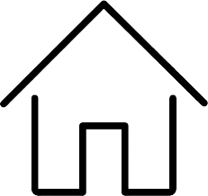| Caminhos | Vantagens |
|---|---|
| 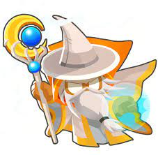 | O caminho de cima do macaco mago faz com que ele ataque muito rápido e dê dano extra a bloons classe MOAB. |
| 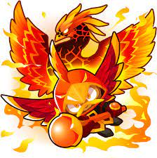 | O caminho do meio do macaco mago faz ele cuspir chamas intermináveis nos bloons, e ganha a habilidade ativável de invocar uma fênix que fica voando em círculos cuspindo bolas de fogo nos bloons, e na última melhoria a fênix fica permanente, e sua habilidade é modificada para ele se transformar em uma superpoderosa fênix de lava por um curto período. |
| 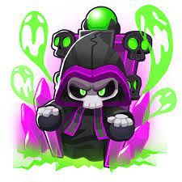 | O caminho de baixo do macaco mago faz com que ele revele bloons camuflados na sua área, e também ganhe a habilidade passiva de reanimar os bloons derrotados, fazendo eles seguirem o caminho contrário e colidirem com os bloons inimigos, e em sua última melhoria faz com que ele reanime MOABs derrotados, até BFBs. |
O Super macaco é a torre mais cara do jogo, no início ele dispara dardos super rápido contra os bloons.
| Caminhos | Vantagens |
|---|---|
| 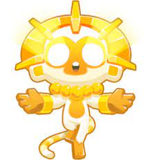 | O caminho de cima do Super macaco faz com que ele se transforme no verdadeiro Deus do sol, soltando raios solares pelos olhos e invocando avatares solares ao seu redor. |
| 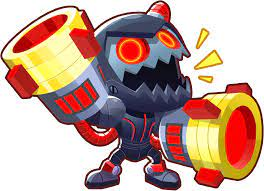 | O caminho do meio do Super macaco transforma ele em um robô aniquilador de bloons, ganhando a habilidade passiva de causar dano crítico e a habilidade ativável de eliminar qualquer coisa que esteja em seu raio, exceto BADs. |
| 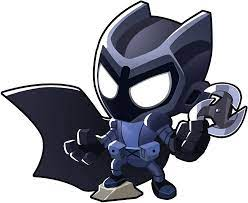 | O caminho de baixo do Super macaco faz ele se transformar em um guardião da noite, ele têm a capacidade de enxergar bloons camuflados, de empurrar bloons com seus ataques e causar dano extra a bloons classe MOAB. Também possuí a habilidade ativável de se reposicionar no campo, de acordo com seu alcance. |
O macaco ninja já possuí, assim que é posicionado, a habilidade de enxergar bloons camuflados. Ele pode também disparar shurikens contra os bloons.
| Caminhos | Vantagens |
|---|---|
| A melhoria de cima do macaco ninja faz com que ele vire o mestre dos ninjas, disparando oito shurikens por disparo em uma velocidade extremamente alta. | |
| 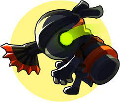 | A melhoria do meio do macaco ninja faz com que ele desvie bloons para trás, remova camuflagem de bloons camuflados danificados por suas shurikens, aumente a velocidade de ataque de outros macacos ninja e desbloqueie a habilidade ativável de danificar bloons classe MOAB quando ele entram no campo. |
| 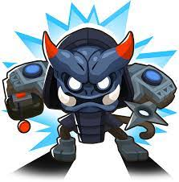 | O caminho de baixo do macaco ninja faz com que ele dispare shurikens teleguiadas, coloque estrepes na pista para e arremesse bombas que estouram bloons de chumbo e atordoem os adjacentes. Também gruda bombas em bloons classe MOAB que estouram depois de um tempo causando imenso dano. |
O alquimista possuí a capacidade de estourar bloons de chumbo com suas poções que grudam nos bloons e causam dano por um tempo.
| Caminhos | Vantagens |
|---|---|
| 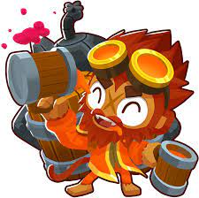 | O caminho de cima do alquimista faz com que ele dê poções para outros macacos beberem, dando atributos de velocidade de ataque, alcance, aumentado e a capacidade de estourar bloons de chumbo. Na última melhoria suas poções se tornam permanentes a todos os macacos que a beberem. |
| 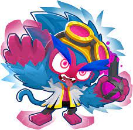 | O caminho do meio do alquimista faz com que suas poções causem dano extra a bloons classe MOAB, removam fortificação de bloons menores e libera uma habilidade ativável de se transformar em um monstro louco que dispara lasers pelos olhos por 20 segundos. No último upgrade transforma cinco macacos próximos em monstros loucos pelo mesmo tempo. |
| 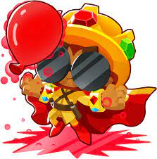 | O caminho de baixo do alquimista faz ele deixar uma poça na pista que afeta os bloons que passarem por lá, e também cria uma mistura que transforma bloons de chumbo em ouro, destruindo eles e gerando dinheiro, também funciona com bloons não chumbo, em menor escala. Na última melhoria ele libera uma habilidade ativável que transforma todos os menores bloons na tela em bloons vermelhos. |
O druida inicial dispara cinco espinhos por disparo, e desde o começo recebe aprimoramento do herói Obyn Greenfoot.
| Caminhos | Vantagens |
|---|---|
| 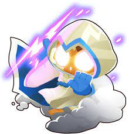 | O caminho de cima do druida faz com que ele estoure todo tipo de bloon e dispare tornados que empurram bloons. Na última melhoria ele dispara tornados tão grandes que empurram todo tipo de bloons e MOAB, exceto os BADs. |
| 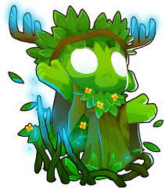 | O caminho do meio do druida faz com que ele crie espinhos onde os bloons estão passando que os estouram, ganha a habilidade ativável de gerar dinheiro por ativação (com efeito melhorado perto de fazendas de bananas) e, na última melhoria, faz com que ele crie espinhos no caminho todo, fazendo qualquer bloons que passar ser danificado. |
| 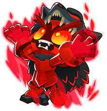 | O caminho de baixo do druida faz com que ele se transforme em um avatar da fúria, disparando espinhos muito rápido contra os bloons, quanto mais bloons tiver na tela, mais dano ele causa. Se forem colocados outros juto a ele, ele recebe aprimoramento de velocidade de ataque e perfuração em até cinco vezes. |